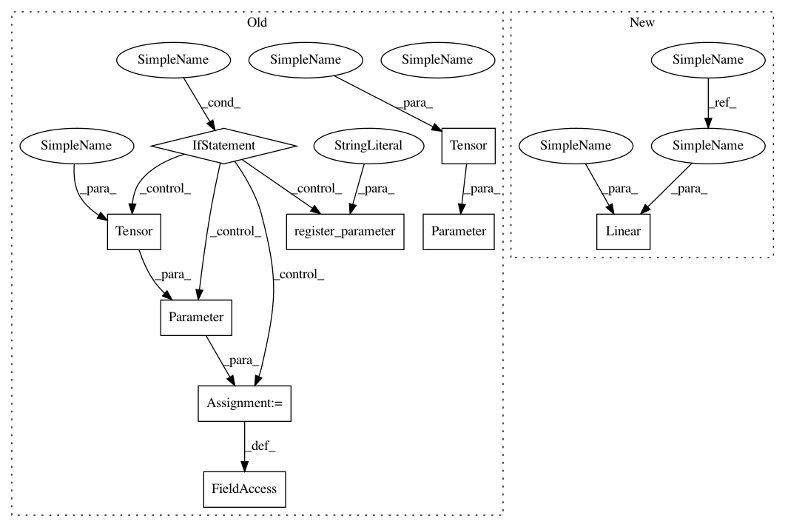

16c6e0a18c6684b8faface5bc24344f0aafdcdea,torch_geometric/nn/dense/dense_sage_conv.py,DenseSAGEConv,__init__,#DenseSAGEConv#Any#Any#Any#Any#,11
Before Change
self.in_channels = in_channels
self.out_channels = out_channels
self.normalize = normalize
self.weight = Parameter(torch.Tensor(self.in_channels, out_channels))
if bias:
self.bias = Parameter(torch.Tensor(out_channels))
else:
self.register_parameter("bias", None)
self.reset_parameters()
def reset_parameters(self):
uniform(self.in_channels, self.weight)
After Change
self.normalize = normalize
self.lin_rel = Linear(in_channels, out_channels, bias=False)
self.lin_root = Linear(in_channels, out_channels, bias=bias)
self.reset_parameters()
def reset_parameters(self):
In pattern: SUPERPATTERN
Frequency: 3
Non-data size: 9
Instances
Project Name: rusty1s/pytorch_geometric
Commit Name: 16c6e0a18c6684b8faface5bc24344f0aafdcdea
Time: 2020-05-22
Author: matthias.fey@tu-dortmund.de
File Name: torch_geometric/nn/dense/dense_sage_conv.py
Class Name: DenseSAGEConv
Method Name: __init__
Project Name: rusty1s/pytorch_geometric
Commit Name: 1210a05912b97ca9b9d87a27aae34821242b7196
Time: 2020-05-31
Author: matthias.fey@tu-dortmund.de
File Name: torch_geometric/nn/dense/dense_sage_conv.py
Class Name: DenseSAGEConv
Method Name: __init__
Project Name: rusty1s/pytorch_geometric
Commit Name: 6bdcccec91008f0b7658838aa2b786d78bbedf09
Time: 2018-12-19
Author: matthias.fey@tu-dortmund.de
File Name: torch_geometric/nn/conv/graph_conv.py
Class Name: GraphConv
Method Name: __init__